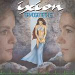

| Artist: | Ixion |
| Title: | Cryogenesis |
| Label: | self produced IMCD0401 |
| Length(s): | 66 minutes |
| Year(s) of release: | 2004 |
| Month of review: | [09/2004] |
| 1) | The Gamble | 10.32 |
| 2) | Into The Cold | 5.11 |
| 3) | The Mold | 7.21 |
| 4) | Rebirth | 7.41 |
| 5) | The Dream | 6.20 |
| 6) | Syndrome | 7.09 |
| 7) | The Wake | 8.58 |
| 8) | To Choose Again | 5.10 |
| 9) | The Sleep | 8.22 |
The next one up is the gurgly opening Into The Cold. The vocals are clear, a bit reminiscent of Magenta, but also Peter Nicholls in a way, mostly in the phrasing. Slowly, ponderously, the song moves on. After a few minutes the guitar rings out, the almost spoken vocals heighten the Magenta feel. This is a very good track thus far, plenty of symphonic power, good drama. The instrumental side lies somewhere between Rush and IQ, with a nod to progmetal.
The Mold has a long intro, whispered voices, plenty of melodic bass playing. I am in doubt about the first vocal part. The voice does not seem overly strong, at least not compared to Esther Ladiges, the first vocalist. The second male voice in this song seems better. Instrumentally, I see ressemblances to Alan Parsons first album, although this is notably more symphonic. Not a love ballad this, but they do keep it slow. The guitar playing is sharp.
In Rebirth the main persona has been reborn, depicted by a light piano passage, accompanied by a dark cello. The power surges when we enter the instrumental interlude. The activity drops down again for the vocal part. The second part of the song is more hectic, with the rhythm guitar setting the tone, which can be strangely folky and up-beat. A bit too much plain fiddling here. When the mellotron and fast rolls set in, the music gains in drama, but between moments such as these, the music simply seems to go on. Finally the pace is in the song, also in the vocal part this time. This up-tempo part is quite nice, many layered.
The Dream continues in the established vein: sharp guitar work, mainly female high-pitched vocals. There are some references to gothic metal, especially when the pace sets in. Compared to the vocalists in those bands, this singer falls short. In fact, on this song the vocals are the weakest element, too high, too forced. The bass is often used as a lead instrument, making for some somber atmospheric passages to alternate with the straightforward progressive rock.
It has to be said though, that the opening of a song such as Syndrome, evokes a certain tension, the plot progressing. The vocalist on this one sounds quite a bit less strained. The sound of a song such as this had the tendency to be a bit muddled, not disturbingly so, but I can imagine a better mix. This song does contain all the ingredients for symphonic rock: plenty of varied passages, rather strong on the rhythm guitar, a meandering keyboard and a relatively high pace. Some of the parts are quite captivating, for instance, the strong chorus.
The Wake is a longish and pacey piece with the tenseness in the music the best aspect of it. The vocal melodies are getting to be a bit selfsame. To Choose Again features a vocalist who is similar to in his voice to Peter Nicholls. The music is dominated by synths this time, that is until the slow moody passage give way for a powered chorus. This is in fact quite a bit different from the earlier tracks, and a welcome alternative too. In fact, this is one of the better tracks, moving more in the direction of Floyd, because of the guitar play, while the vocals can be quite rowdy.
The Sleep has the 'speaking' female vocals. Maybe it is my preference for female voices, but the vocal melody does not speak to me as the one of the previous song. It is simply a vehicle for the lyrics. I like her more in the second part, where she does not have to strain as much. The album ends euphorically with vocal choirs.
Now, you may have gotten the impression that I do not like this album. This is not the case. I know more neo-progressive albums I like less, than I know that I like more. As a result, this album is certainly above average, mainly due to the melodies and the right amount of drama and tenseness in the music.